← Каталог портала
Таблица коллекции | 
Навигация по канону | 
Связные экранизации |
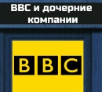


 Пародийный спецвыпуск BBC One
Пародийный спецвыпуск BBC One Проклятие Фатальной Смерти
The Curse of Fatal Death
12 марта 1999
Мини-спецвыпуск
4 эпизода по 5 минут | 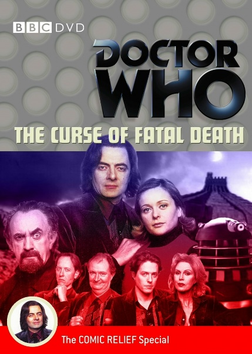 | MVO [GladiolusTV]
MVO [BeeFilm]
DVO [KiraLis39+FESHI]
VO [Вячеслав Прошин]
или Original [ENG] + SUB
|
|---|
▰▰▰▰▰▰▰▰▰▰▰▰▰▰▰▰▰ Анимационные WEB-истории BBCi Webcasts
Смерть приходит ко времени
Death Comes to Time
с 13 июля 2001
по 3 мая 2002
Анимация
5 эпизодов по 30-40 минут | | VO Персанов,
+ Original [ENG] + SUB:
|
|---|
В реальном времени
Real Time
с 2 августа
по 6 сентября 2002
Анимация
6 эпизодов по 10-15 минут | 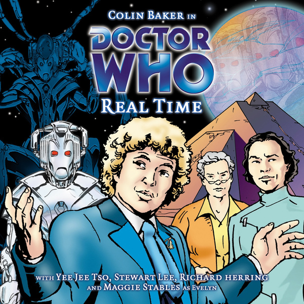 | VO Персанов,
+ Original [ENG] + SUB:
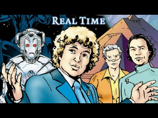 |
|---|
Шада
Shada
с 2 мая
по 6 июня 2003
Анимация
6 эпизодов по 20-25 минут | 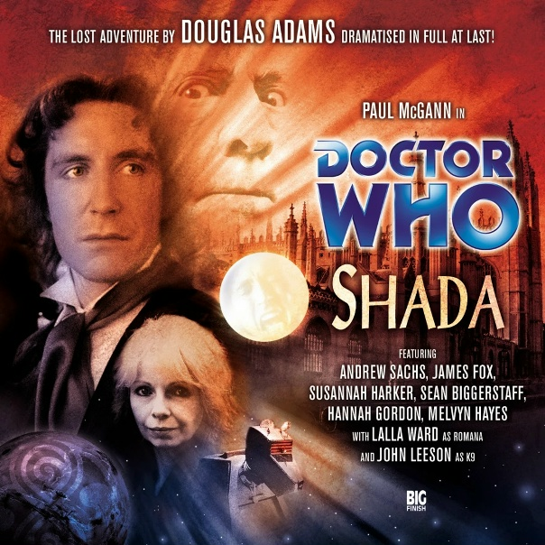 | VO Персанов,
+ Original [ENG] + SUB:
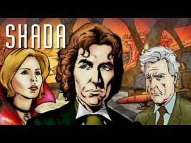 |
|---|
▰▰▰▰▰▰▰▰▰▰▰▰▰▰▰▰▰ Анимационная WEB-история
Альтернативный "Девятый Доктор" Крик Шалки
Scream of the Shalka
с 13 ноября
по 18 декабря 2003
Анимация
6 эпизодов по 12 минут | 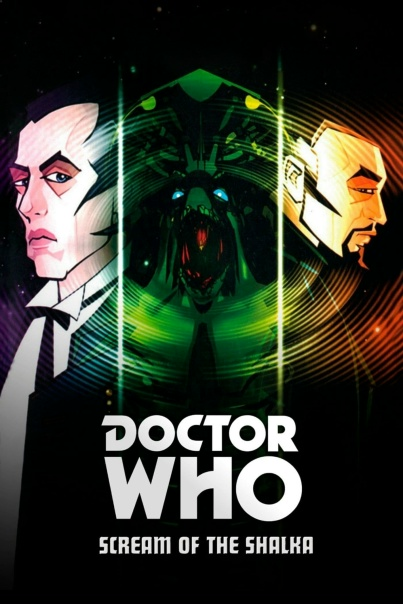 | VO Персанов
VO SkomoroX
+ Original [ENG] + SUB:
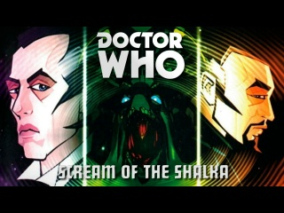 |
|---|
▰▰▰▰▰▰▰▰▰▰▰▰▰▰▰▰▰ Анимационные WEB-истории
Приключения 10-го доктора В поисках Бесконечности
The Infinite Quest
с 2 апреля
по 27 июня 2007
Анимация
6 эпизодов по 6-12 минут | 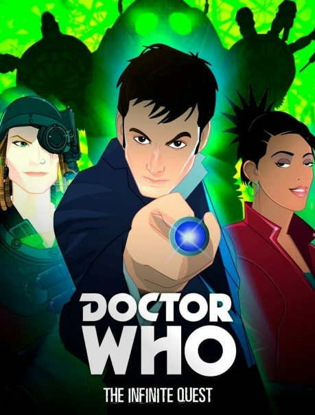 | MVO [WuzVoice]
VO [S@M]
или Original [ENG]
Субтитры: Русские {Pedro_PJ}
или Английские
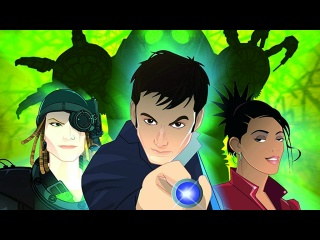
омнибус |
|---|
Страна грёз
Dreamland
с 21 ноября
по 27 ноября 2009
Анимация
13 эпизодов по 3-5 минут | 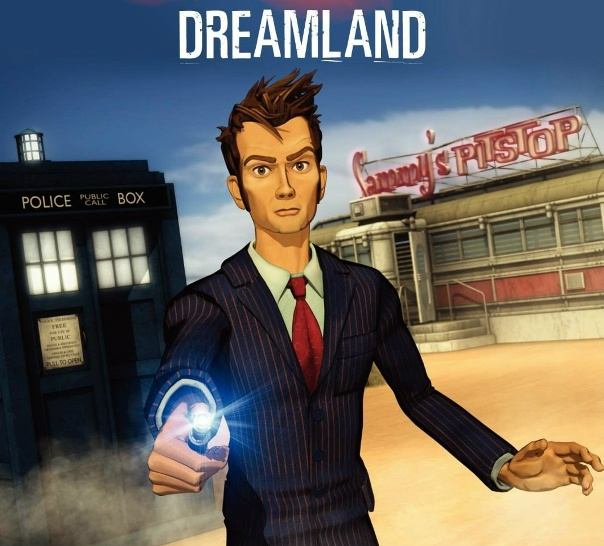 | VO [Вячеслав Прошин]
или Original [ENG] + SUB

омнибус |
|---|
▰▰▰▰▰▰▰▰▰▰▰▰▰▰▰▰▰ Анимационная WEB-история
О далеках Далеки!
Daleks!
с 12 ноября
по 10 декабря 2020
Анимация
5 эпизодов по 10 минут | 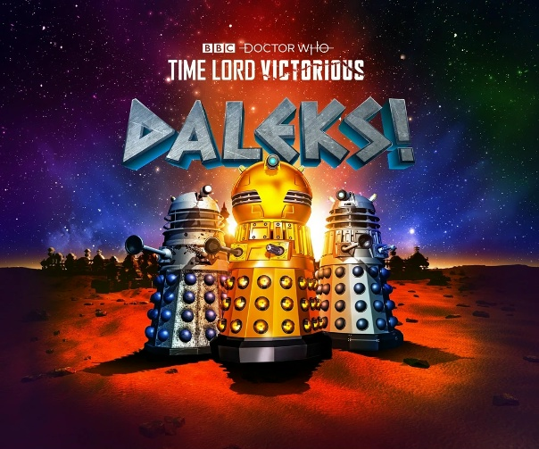 | MVO BibaKo
+ Original [ENG] + SUB:
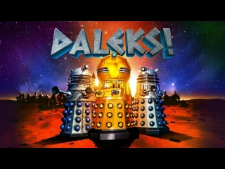 |
|---|